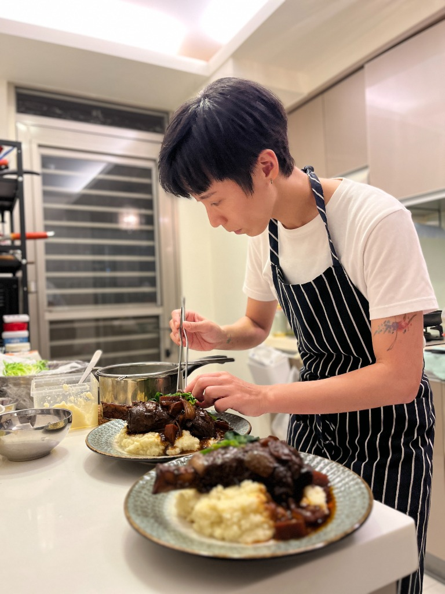
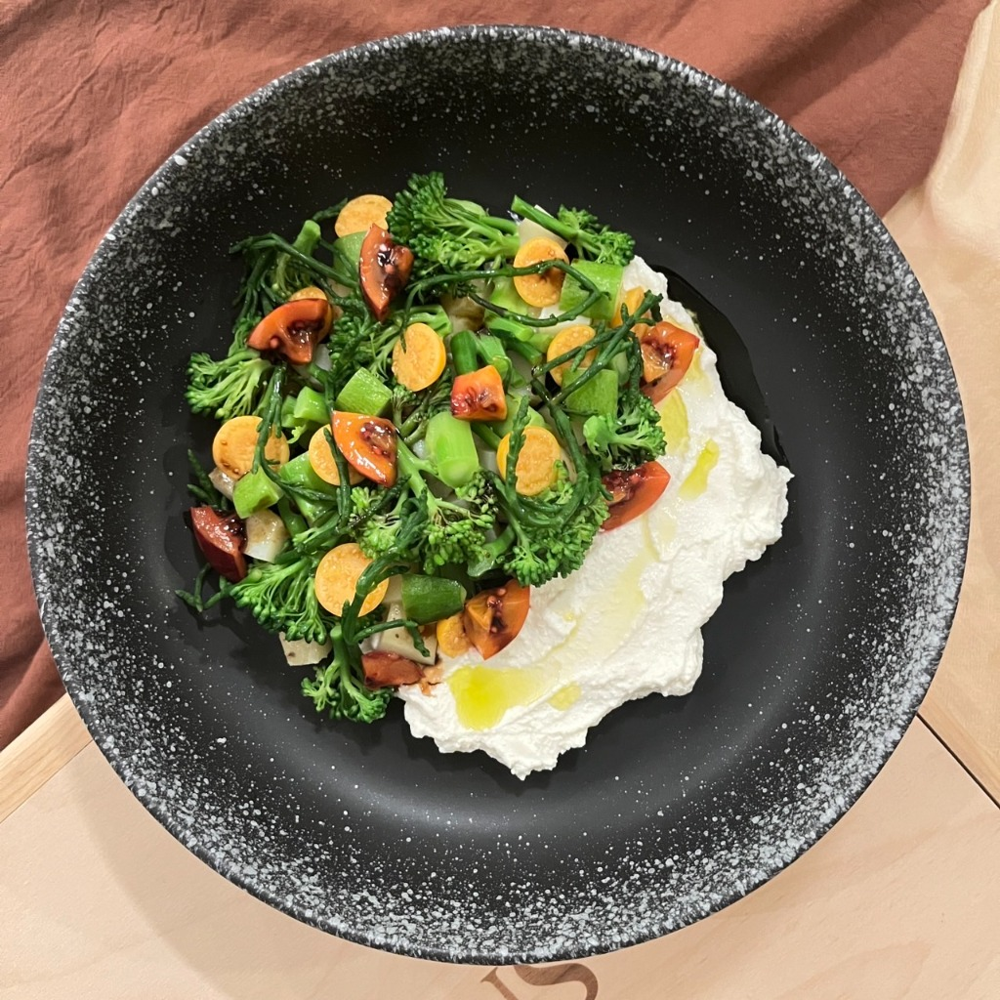

Golden Corn Diner & roomie_club48 主理人
微倫米負責人、Golden Corn Diner 與 roomie_club48 主理人。曾任職於 Fridays、多間獨立小餐廳，以及遊戲公司普橘島特約私廚。
從台北回到高雄，曾參與 homeveler 家廚活動。當看到外國旅人理解台灣南部特色物產與食物時，那份快樂與榮幸，是創辦微倫米的初衷。
「微」是透過生活細節觀察，創造深度連結；「倫米」則是延續 Roomie 的意義——大家來當我的一日室友，共樂、共遊、共食。
「下廚可以很簡單，探索世界不一定要從登機開始。透過料理，我們也可以遊歷世界。」
由淺入深的三種探索方式，依你的旅行節奏挑選專屬的私廚手作與在地漫遊
 輕度版 · 經典手作
輕度版 · 經典手作
直接來到溫馨的 Golden Corn Diner 美式貨櫃屋空間，跟著主廚 Joe 動手做經典或具台灣特色的創意料理，最後圍坐在一起像老朋友般共食交流。
 中度版 · 市井探索
中度版 · 市井探索
由主廚 Joe 帶領穿梭高雄傳統市場，解密南台灣獨特物產與人情味；回到貨櫃屋將剛買的新鮮食材親手烹調成美味家常菜，享受溫馨共食時光。

升級版 · 風土盛宴走訪高雄在地農場或魚塭，由生產者親自導覽認識南台灣農漁業；順道走訪市場採買，最後回到貨櫃屋，將風土精華烹調成一桌充滿南部靈魂的料理。
名額有限，跟著主廚 Joe 一起展開一場有溫度的南台灣料理食旅吧！